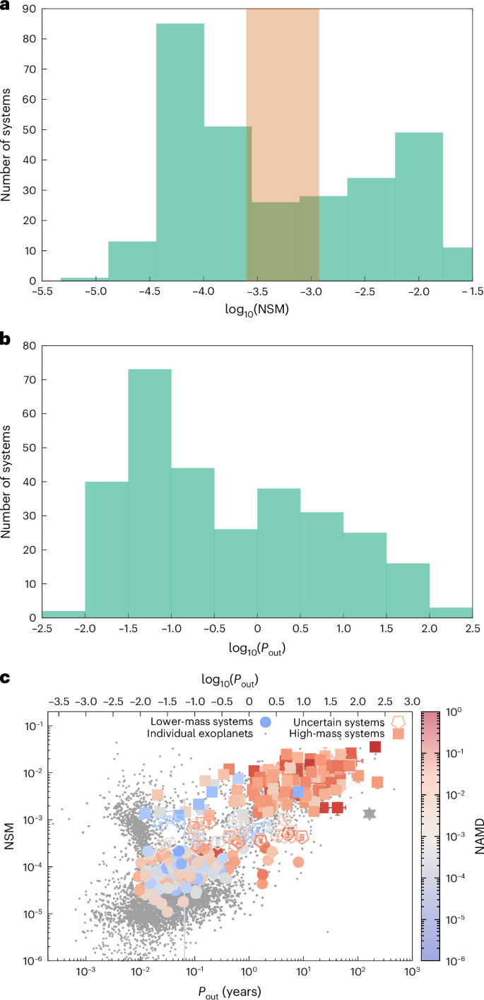

10月13日全天补报，于10月14日补发。当日无独立HE新公告，本期收录1篇通过筛选的期刊简报；不重复前一期HE文章，论文日期按正式版本列出。
生成时间：2026-10-14T20:55:36+08:00
今日保留论文数：1
内容构成：今日新文 1 篇；补充推荐 0 篇；经典旧文精读 0 篇
阅读分层：重点精读 0 篇；相关简报 1 篇。精读依据科学贡献筛选，简报保留方法、结论及局限。
相关简报
1. Two families of multi-planet systems with distinct architectures and stellar hosts
- 来源：Nature Astronomy
- 链接：https://www.nature.com/articles/s41550-026-02990-8
- 作者：Diego Turrini, Camilla Danielski, Danae Polychroni, Robert Przyłuski, Hans Rickman, Diego Bossini, J. M. Diederik Kruijssen, Angelo Zinzi
- 公告 / 来源日期：2026-10-13
- 阅读层级：相关简报
- 评分：novelty 8/10，importance 8/10，relevance 6/10，final 8.30/10
- 推荐理由：正式版10月13日发表且未读；统一系统架构指标、多个嵌套验证样本与统计控制，把行星质量两族、动力学激发和主星性质联结。全文及原图可核，贡献达期刊天文8.0门槛；未加方向分7.30，因此brief。不是给期刊刊名额外提高创新/重要性。
中文题目：已知多行星系统的两个家族：质量、动力学激发与主星性质怎样相连
问题、方法与结论：作者将NASA系外行星档案中的系统按总行星质量、轨道范围及动力学激发统一比较。基准样本含298个系统，再用189个主星参数一致、89个偏心率完整及68个真质量完整的嵌套子样本检验。已知系统呈低质量与高质量两族；高质量族更受行星相互引力影响，动力学激发约高一数量级，主星也偏富金属。这里的“温度更高”指轨道偏离圆形共面的程度，并非行星表面温度。
意义与贡献：贡献是把系统整体架构与主星留下的形成环境线索联结，而非只按单颗行星大小分类。探索模拟更支持原本不稳定或残缺共振链的演化路径，但没有唯一复原每个系统的历史，也没有证明银河系全部行星系统恰好只有两类。
可借鉴之处：可借鉴统一指标、不同缺失条件子样本及多重检验的组合。主星质量与金属丰度经验推算的原盘固体物质相差约三倍，为物理解释提供线索；这不是直接测量已经消失的原行星盘。样本和代码口径也需分开：处理后的系统样本公开，分析代码需向作者申请。
局限与关注点：基准样本仅覆盖当时已知多行星系统约28%，远距离小质量行星仍难发现；部分偏心率和相对倾角靠经验关系补估。固定两成分混合拟合及分组后差异显著，不能代替完整发现选择函数检验。太阳系只作参照，读图时须保留中间归属不清的系统及其误差。
图1：已知多行星系统的质量与轨道范围

图注：基准样本L中多行星系统的整体性质。(a)归一化系统质量NSM（总行星质量与主星质量之比）的分布；浅红阴影为低、高质量两族归属概率相近的区间。(b)最外行星轨道周期P_out的分布。(c)两族在NSM—P_out空间与已知系外行星族群比较；空心符号表示归属不确定系统，灰色星号为太阳系，右侧色标为归一化角动量亏损NAMD。点为蒙特卡洛分布众数，误差棒为16和84百分位，多数小于符号；P_out以年计，(a)、(b)横轴取十进对数。来源：Turrini、Danielski等，Nature Astronomy正式论文图1，DOI10.1038/s41550-026-02990-8；CC BY 4.0。
怎么看这张图：先看(a)的质量比例分布与归属不确定区，再看(b)最外行星周期分布；(c)把两族放回实际可探测参数空间。质量与轨道分布同时受发现方法影响，直方图低谷不能直接解释为真实母体不存在系统。 一张原图展示论文的分组证据、保留的不确定区及发现选择范围，直接支持简报主结论。
来源与置信度：Nature Astronomy open-access HTML；source verified；https://media.springernature.com/lw685/springer-static/image/art%3A10.1038%2Fs41550-026-02990-8/MediaObjects/41550_2026_2990_Fig1_HTML.png
说明
评分由 LLM 给出初评，再由本地阈值策略过滤；IACT、TeV 伽马射线和高能中微子天文学按重点方向处理。